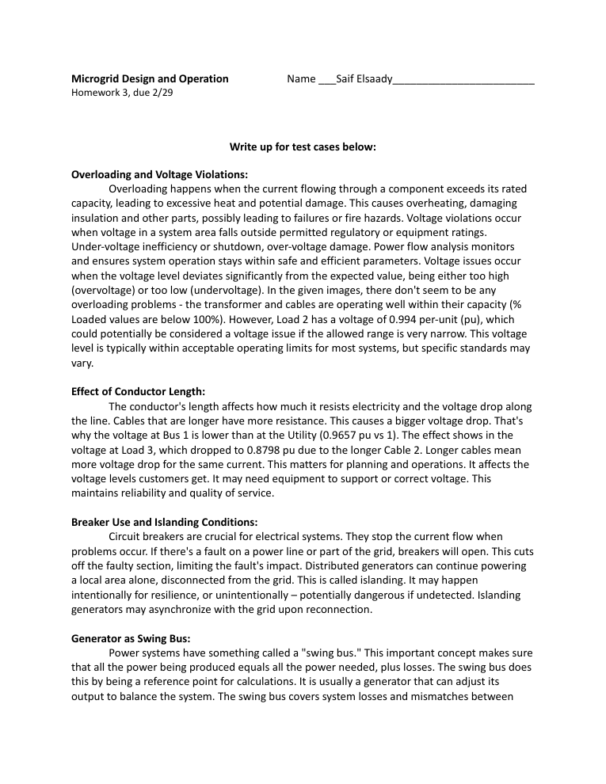

Designing an islandable microgrid for critical loads on Oahu, Hawaii

Coursework from EGR 476/598 (Microgrid Design and Operation) that designs and analyzes a microgrid to keep a critical facility powered on the island of Oahu, Hawaii. The work pairs an economic optimization of generation and storage assets (Project 1) with a power-engineering design and power-flow analysis of the resulting one-line system (Project 2), plus a distribution power-flow homework write-up.
The design was carried out in Xendee, building a GIS-located project, populating solar, wind, battery, and diesel asset parameters with Lazard cost ranges, and running least-cost and resiliency optimizations to size the system. The optimal asset sizes were then taken into a one-line schematic and modeled in Xendee's power-flow tools, where peak-load runs were performed for grid-connected and islanded operation and violations were corrected through asset settings, tap changes, and cable/transformer sizing.
The reports document a feasible microgrid that meets peak load both grid-connected and islanded, with per-unit voltages and percent-loading figures reported per bus and component (e.g., a 4-bus case correcting Load 3 from 0.8798 pu to 0.9324 pu and verifying all elements under 100% loading); see the deliverables in docs/.